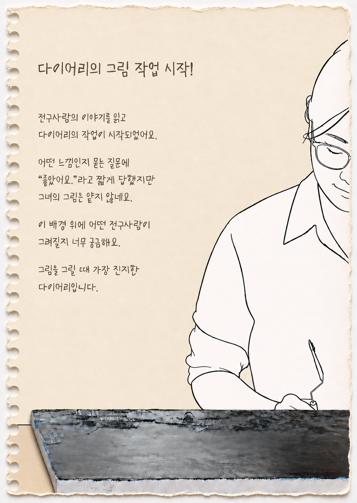
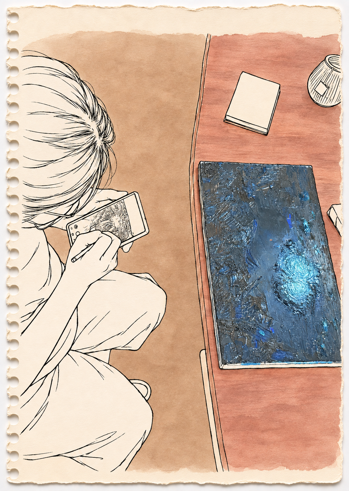

다이어리의 그림 작업 노트


유화 작업은 천천히 진행되고 있어요. 겹겹이 쌓아올린 물감을 통해 거친 질감을 표현하고 있어요.
그 위에 얹을 전구사람의 이미지를 열심히 고심하고 있어요. 다이어리는 물감과 폰을 모두 사용하여 다채로운 이미지를 만들어 보려고 해요.
조금씩 색을 입어가고 있는 캔버스가 빛을 찾아 가는 전구사람의 변화처럼 천천히 천천히 진행되고 있답니다.


유화 작업은 천천히 진행되고 있어요. 겹겹이 쌓아올린 물감을 통해 거친 질감을 표현하고 있어요.
그 위에 얹을 전구사람의 이미지를 열심히 고심하고 있어요. 다이어리는 물감과 폰을 모두 사용하여 다채로운 이미지를 만들어 보려고 해요.
조금씩 색을 입어가고 있는 캔버스가 빛을 찾아 가는 전구사람의 변화처럼 천천히 천천히 진행되고 있답니다.